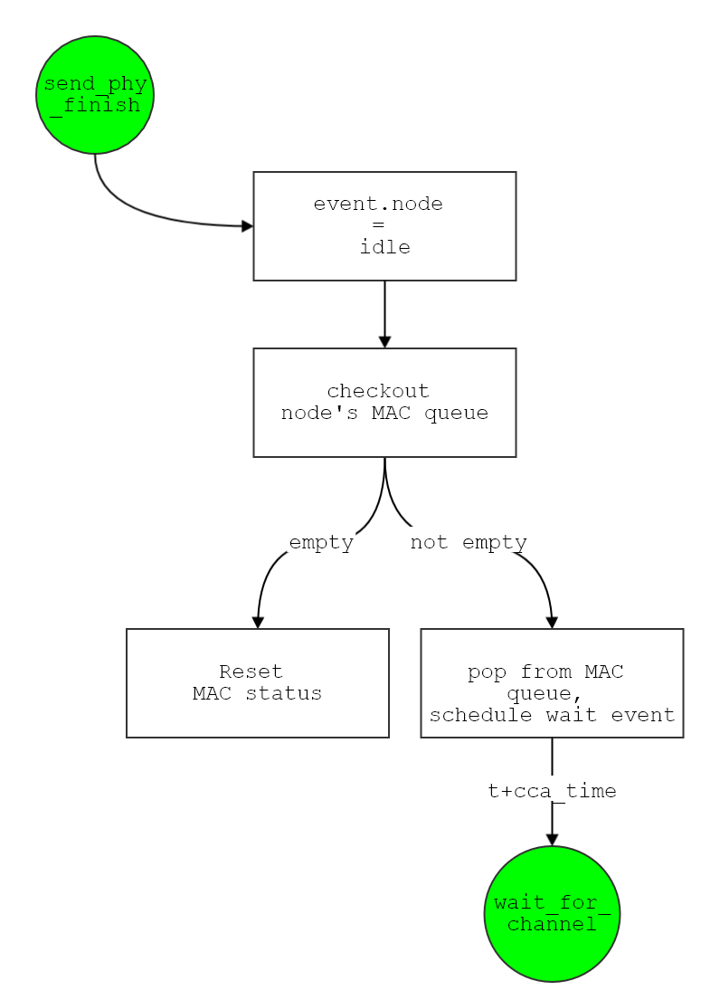

Introduction
Project 2 is aim to anaylze the source code of 802.11 mechanism. Using MATLAB source code to illustrate how does it work.
Obviously, the work can be divided into several part:
- Power consumption (Radio Propagation, Mobility, PHY)
- transmition rate
- transmition power
- distance
- Interference among nodes (NET, APP)
- Internal receiving mechanism in each node. (MAC)
- contention window mechanism
- re-transmit mechanism
Note
- This project is used for NCKU network simulation course, use for education only.
- Written by
Kevin Cyu
Nuntanut BhooanusasJingZhao Zhuo
Radio Propagation
Edit: Kevin Cyu
This part introduce 3 model on power delivery:
- free space propagation
- two-ray ground reflection model
- lognormal shadowing model
Free Space
- transmit/receive antenna without any influence of the earth surface , so called “free space”
- Equation:
w = pT * Gt/ (4 * p * d^2)., is the power which this transmitter can provide.
- d: antenna coverage range
- pT : power ( transmitter )
- Gt : antenna gain
- 4 p d2 : coverage area size
- This equation represent an
sphere, where transmitter is in the center, and the radius is d
4 p d^2 is the area which the power delivery by transmitter can reach.
Path Loss Theorem
- When distance of propagation increase, the radiated
energy will decrease, so called path loss
- power and
d^2 is inversely(成反比).
P' = P - 20*log(d'/d)
Two-ray ground reflection model
- A more realistic model compare to
free space
- Not only calculate the transmission of node to node, also consider the
reflection of from the earth.
- In this model, the result in
short-distance is worse because the oscillation combination from constructive and destructive ray.
Lognormal shadowing model
- The above 2 model are all in the ideal case in
cycle.
- Practically, received power will be an
random variable which based on multi-path propagation in the specific distance, a.k.a fading effects
- Need to consider:
path loss model, variation of received power(in specific distance)
shadowing model extends the ideal circle model to a sophisticated model, a more realistic model.
Mobility
Edit: Kevin Cyu
Random waypoint model
Random model for the movement of mobile users, and how their location, velocity and acceleration change over time.
So this part is going to simulate the status of movement of the mobile user randomly!
- Why this model is most popular
mobility model for mobile ad-hoc network(MANET) routing protocol?
- simplicity
- wide availability
=>
each mobile node in this random mobility simulation model is independent, and all using a random way to move (without any constraint); Also, its destination, speed, direction all using choose randomly.
=>
In each simulation routine (i.e. tick), will let each node choose randomly on destination, speed again, until simulation clock end.
- Have two variation:
- random walk model
- random direction model
Physical Layer
Edit: Nuntanut Bhooanusas(Chuanjie Fu)
There are 2 parts in this section:
- SNR-based packet capture
- Broadcast & Dynamic transmission rate and power
SNR-based packet capture
Signal-to noise ratio(SNR), in decibels , is a measurement between receive signals and noise signals. For wireless communication, it can be computed by Equation N.1 to N.3. The example of SNR is given in Picture N.1


This ratio is unreliable if it falls into 10-15 db and its poor rate is from 16 db to 24 db, whereas the rate of 24-40 db and exceeding 41 db is good and excellent respectively.
The SNR is vital for IEEE 802.11 since if it is very low, the packet might need a re-transmission several times. Whether or not delivering a packet from source to destination will be successful is depended on transmission rate and power adjustment. The next section explains towards this adjustment.
Broadcast & Dynamic transmission rate and power
Another thing , a transmission power , is to save energy of devices and battery life. It also affect the transmission rate. For example, when the distance of piers is small, the power level will be reduced and the data rate will increase to the highest possibility such that the packet can reach the destination.
Both the transmission power and the transmission rate is necessary for a service requirement since they can be related to packet errors during broadcasting. The further information is provided in [1].
[1] http://citeseerx.ist.psu.edu/viewdoc/download?doi=10.1.1.404.5870&rep=rep1&type=pdf
Overlay routing protocols
Edit: Taku
Define:What is an overlay network?
- A network defined over another set of networks
- The overlay addresses its own nodes
- Links on one layer are network segments of lower
layers
- Requires lower layer routing to be utilized
- Overlaying mechanism is called tunneling
- Example: Virtual Private Networks(VPN)
Routing on the overlay

- The underlying network induces a complete graph of connectivity(No routing required!)
- One virtual hop may be many underlying hops away.
- Latency and cost vary significantly over the virtual links
- State information may grow with E(n^2)

- Overlay network users may not be directly connected to the overlay nodes
- User must be redirected to a “close by” overlay node
For more detail:
http://www-inst.eecs.berkeley.edu/~ee228a/fa03/228A03/Lecture%20Slides/routing4.pdf
MAC Layer
Edit: Nuntanut Bhooanusas(Chuanjie Fu)
There are 2 parts in this section:
- CSMA/CA( Carrier Sense Multiple Access with Collision Avoidance)
- Virtual Carrier Sense and RTS-CTS-DATA-ACK
CSMA/CA( Carrier Sense Multiple Access with Collision Avoidance)
CSMA is a protocol for carrier transmission in IEEE 802.11 network to protect a packet collision by listen-before-talk; this approach is nowadays applied to distributed coordination function(DCF).
In DCF, there are two time periods. The first one, DCF Inter-Frame Space(DIFS), is to tell a senders whether or not the medium is idle before starting sending a packet. Another one , Short Inter-Frame Space(SIFS), is a period that the medium can send the acknowledgement and will take place after the end of DIFS. The basic example is shown in Figure N.1
- Figure N.1 Basic method of DCF.
However, the method above can bring about collisions in the case that there are two or more stations sense the medium idle and try to transmit at the same time. In order to prevent this situation, the station should postpone access until the medium becomes idles and select a random backoff value. How to medium protect collisions and choose this value is fully explained in course material(Please see in the NCKU moodle)
Virtual Carrier Sense and RTS-CTS-DATA-ACK
RTS/CTS is defined to solve the hidden terminal problem found in wireless that use CSMA. Importantly, the sender and receiver perform a handshake mechanism by exchanging RTS(Request to send) and CTS(Clear to send) control frame.
This approach will begin after waiting the DIFs time; then the sender send RTS to receiver prior to transmission of data frame. After awaiting SIFs, the receiver will respond with CTS including the successful handshake frame to make sure that the medium is reserved for transmission.
Moreover, RTS/CTS employs Virtual Carrier Sensing so as to inform other stations that there is packet broadcasting in the network by RTS and CTS frames including the duration when the sender and the receiver complete the transmission. As a result, all stations around this area will then set their NAV(Network Allocation Vector) after obtaining these frame so that they can know the period that they need to wait for the completion of the transmission.
The RTS/CTS mechanism is provided in Figure N.2.
- Figure N.2 RTS/CTS Mechanism.
Tracing the code
Workflow - sim1.m
We'll have a closely look on the main program flow here, and then move to event part to have advanced appearence.


Workflow - sim2.m
Event
Listing all event types in simulation.
Sim1
send_phy
When current event's node is idle & nav is not busy -> will using this node as transmitter
And then set up the other nodes as receiver: (2 mode)
- broadcast
- broadcast from this transmitter
- impact all idle node (using
overlay meachanism to identify), and those nodes will schedule a recv_phy event for each one of them.
- unicast
- This part will illustrate
unicast from event.node to event.pkt.rv
- First set
event.pkt.rv to receiver mode
- Then set number of
n nodes into receiver mode
After all setting above, setup the transmitter's finish event: send_phy_finish ( in t+txtime+eps later, which t+txtime is recv_phy event )
Check event.pkt.type:
- =
rts:
- set timeout timer for RTS
- schedule event
timeout_rts after t + (txtime + SIFS + cts_tx_time)*2
- And record this node as pending id (waiting mode)
- =
data & (event.pkt.rv != 0):
- set timeout for DATA
- schedule event
timeout_data after t + (txtime + SIFS + ack_tx_time)*2
Node not idle or nav is block
- -> schedule
wait_for_channel after t + cca_time
- push it into waiting queue

send_phy_finish
Set node back into idle mode.
And then checkout this node's MAC queue ->
- if empty, then
reset the MAC status
- if non-empty, then pop out current element, and schedule
wait_for_channel after t + cca_time
- Make it prepare to use the radio resource!

send_mac
- set
event.pkt.type as data
event.pkt.nav equal to SIFS + cts_tx_time + SIFS + tx_time(event.pkt) + SIFS + ack_tx_time- if
event.pkt.rv != 0 (i.e. unicast)
- then set
event.pkt.type as rts
- if this node is free, but still have packets waiting in MAC queue:
- if MAC queue
empty, and MAC status = 1
- true, then push event(i.e. packet) into MAC queue
- false, means node is busy, then schedule
wait_for_channel event after time t + cca_time

recv_mac
recv_phy
- switch to
idle mode
- And then check its
virtual collision:
- if occur: drop packet directly
- if not occur:
- call
recv_phy function ( e.g. recv_phy.m )
- calculate the probability of receiving process ( 0 or 1 )
- if == 1
- if this packet is for this node ( broadcast or unicast )
- schedule
recv_mac event !
- if not for this node, use its
nav:
- Update those:
nav.start and nav.end of event.pkt.rv
wait_for_channel
- If node is idle and channel is free
true:
- If backoff_counter of this node > 0
true:
- resume (restart) the backoff, then schedule
backoff event after time t + slot_time for this node!
false:
- start backoff from
DIFS first, then schedule backoff_start event after time t + DIFS for this node!
false:
- means node is not idle, then it must be receiving process;
- need to wait until the current process end
- so schedule
wait_for_channel event after t + cca_time again!
backoff
- If node is still idle & channel is free (→ continue doing backoff)
true:
- If backoff_counter of node > 1
true:
- decrease this counter by 1
- and then re-schedule
backoff event after t + slot_time
- or backoff_counter == 0 (i.e. ready to send packet !)
- schedule
send_phy event after time t for this node
false: (i.e. node is not idle / channel is busy when backoff occur)
- If backoff_counter of node > 1
- or == 0
true:
- start a new backoff counter, which more larger than current one! (You can see more in contention window part → MAC Layer)
- If not > 1, or == 0 (not match with above case)
- then schedule
wait_for_channel event after time t + cca_time for this node

backoff_start
(after waiting DIFS, start backoff!)
- If node is still idle, and channel is free
true:
- then schedule
backoff event after t + slot_time for this node
false:
- means that channel during
DIFS becomes busy!
- then schedule
wait_for_channel, to wait until the channel is free.

timeout_rts
- To begin with, Check whether or not there is a
pending id being equal to waiting RTS id i.e., (pending_id(i) == event.pkt.id)
- if so,
- start re-transmit
i.e., retransmit(i)=retransmit(i)+1
- if retransmit(i) > max_retries
- if so, (node i has so many to transmit RTS)
- drop packet
retransmit(i) = 0 ,pending_id(i) = 0
- Check whether or not there are many packets waiting to be sent in queue
- yes
mac_status(i) = 1- Schedule
wait_for_channel event after t + cca_time
- No
- mac_status(i) = 0` (cannot send RTS successfully, reset MAC layer)
- No ,
- (retransmit the RTS)
- Schedule
wait_for_channel event after t + cca_time
- No, display(pending id does not match the waiting RTS id)
timeout_data
timeout_rreq
- Check how many pending RREQ ids are there in the node id
temp = find(net_pending(i).id == event.net.id) the function find will return a indices of non-zero element
- if len(temp = 0)
- if yes →every RREQ is acknowledged , do nothing → return
- if len(temp >1 )
- if yes → error(“node i has more than one pending RREQs with
net.id
- The RREQ is not acknowledged yet by an RREP
- Start re-transmit →
net_pending(i).retransmit(temp) = net_pending(i).retransmit(temp) + 1
- if there are so many retries →
net_pending(i).retransmit(temp) > net_max_retries
- If so,
- -Drop the RREQ i.e.,
net_pending(i).id(temp)=[] , net_pending(i).retransmit(temp)=[]
- -if network_queue is not empty (so redundant)
- clear network queue →
net_queue(i).list(1)=[]
- Schedule
send_net2 event after t
- No, retransmit RREQ by
- -Schedule
send_mac event after t
- -set new_id for re-transmission
newevent.net.id = new_id(i)net_pending(i).id(temp) = newevent.net.idrreq_out(i)=rreq_out(i)+1
- -Sent RREQ out via crosslayer if type of application is defined ‘crosslayer_searching’ i.e.,
if(strcmp(newevent.app.type, 'crosslayer_searching')->rreq_out_crosslayer(i) = rreq_out_crosslayer(i) + 1
- -Set timeout timer for the retransmitted RREQ
- -Schedule
timeout_rreq event after t+rreq_timeout
- -Save the new id of the pending RREQ by
net_pending(i).id(temp)=newevent.net.id
send_net
send_net2
recv_net
- Decrease time to live(TTL) by 1 unit
- event.pkt.ttl = event.pkt.ttl - 1;
- if(event.pkt.ttl<0)
- if the destination node is as same as transmission node
- Check type of network layer
rreq
- Change flag of rreq_in → rreq_in(i)=rreq_in(i)+1
- Enable rreq for crosslayer if app.type is ‘'crosslayer_searching’ i.e.,
rreq_in_crosslayer(j) = rreq_in_crosslayer(j) + 1
- if node
j is member of the route in network
- Yes, already found the route, do noting , return
- No, append node
j to the route i.e., event.net.route = [event.net.route j]
- If node j is equal to the given destination by
event.net.dst
- Yes
- node
j am the destination of this RREQ: send RREP back
send_rrep = -1- if rrep_table is empty
- yes,
k = 1 and send_rrep = 1
- No, rrep table is not empty ,
- Check at the source whether there are saved RREQ or not()
if (rrep_table(j).list(k).route(1)==i)
- yes,
- set
send_rrep = 1, if the RREQ is table is old i.e., if rrep_table(j).list(k).id < event.net.id
- if RREQ id in table is equal to
event.net.id
- Yes, if the matric of event.net is smaller than rreq table,
send_rrep = 1, Otherwise, send_rrep = 0 //not a better route: ignore
- No,
send_rrep = 0 //reply to the newer
- If
send_rrep != 0
- Yes, Change flag rrep_out →
rrep_out(j) = rrep_out(j) + 1
- rrep_out_crosslayer(j) = rrep_out_crosslayer(j) + 1 if event.app.type = 'crosslayer_searching'
- if(
send_rrep<0) → k = length(rrep_table(j).list) + 1 — no early saved RREQ from this src: add one
- initialize
rreq_table
- Schedule
send_mac event after t
- newevent.net.type =
'rrep'
- newevent.pkt.type=
'data';
- newevent.pkt.tx = j;
- newevent.pkt.rv = newevent.net.route(temp - 1); % next hop
- newevent.pkt.id=0 -- will be updated in 'send_phy'
- newevent.pkt.nav=0; -- will be updated in lower layer
- return
- No, do nothing ,return
- Node j is not the destination of the RREQ , re-broadcast it
- if event.pkt.ttl<0
- Yes, drop it ,return
- No,
- if event.net.id > bcast_table(j, event.net.src)
- Yes, forward this RREQ only if meduim have not forwarded the same broadcast RREQ from the same source before
- Enable rreq for crosslayer if app.type is ‘'crosslayer_searching’ i.e.,
rreq_forward_crosslayer(j) = rreq_forward_crosslayer(j) + 1
- update braodcast table
bcast_table(j, event.net.src) = event.net.id
- Schedule
send_mac event after t + rand*slot_time
rrep
- Change flag of rrep_in → rrep_in(i)=rrep_in(i)+1
- Enable rrep for crosslayer if app.type is ‘'crosslayer_searching’ i.e.,
rrep_in_crosslayer(j) = rrep_in_crosslayer(j) + 1
- If route is empty , return — node j is receiving a RREP without any route entry
- temp = find(event.net.route == j) — examine node j is in the route or not
- If there are node J more than once in route(RREP) , do noting , return
- If there is node J more than once in route(RREP), do nothing, return
- if the number of node J == 1
- Yes //find the requesting node so this RREP is suspected
- Check how many RREQ in the route
(temp2 = find(net_pending(j).id == event.net.id)
- if there is no RREQ , node j receives an RREP without a corresponding pending RREQ, return
- if there are RREQ more than once in the route, return
- Removes the pending RREQ
- net_pending(j).id(temp2) = []
- net_pending(j).retransmit(temp2) = []
- If event.app.type = ‘crosslayer_searching’
- Yes
rrep_destination_crosslayer(j) = rrep_destination_crosslayer(j) + 1- Schedule
recv_app event after t
- No
- Schedule
send_mac event after t
- newevent.net.type =
'data'
- newevent.net.id =
new_id(j)
- newevent.pkt.tx = j;
- newevent.pkt.rv = newevent.net.route(temp - 1); % next hop
- newevent.pkt.type=
'data';
- newevent.pkt.id=0 -- will be updated in 'send_phy'
- newevent.pkt.nav=0; -- will be updated in lower layer
- No,
- Schedule
send_mac event after t
- newevent.net.type =
'rrep'
- newevent.pkt.tx = j;
- newevent.pkt.rv = newevent.net.route(temp - 1); % next hop
data
- if (event.net.dst == 0)
- Yes,
//a network layer broadcast packet
- if event.pkt.rv != 0, waring
node j receives a broadcast at NET, but not at MAC
- if event.net.id is new than bcast_table(j, event.net.src)
- update bcast_table(j, event.net.src) = event.net.id
- Schedule
send_mac event after t + rand*slot_time
- return
- if route is empty
//receives a unicast data packet at network layer
- ‘Node j is receiving a Net_DATA without any route entry` , return
- temp = find(event.net.route == j)
// find there are node j in the route or not
- if find node
j more than once in the data packet, return
- if there is no node
j in the data packet, return
- if node
j is the destination
- Yes
- Schedule
recv_app event after t
- No
- Schedule
send_mac event after t
- newevent.pkt.tx = j;
- newevent.pkt.rv = newevent.net.route(temp + 1)
Forward this data packet to the next hop towards the destination

send_app
- Check type of application layer
event.app.type
- Crosslayer_Searching
- node i sends a a crosslayer searching request for key(node) e.g.,
event.app.key
- Schedule
send_net event
- from source
newevent.net.src = i to destination newevent.net.dst = newevent.app.key
- dht_serching
- Schedule
send_net
- check whether or not there is dht overlay route →(
if isempty(newevent.app.route))
- No,
- initialize dht overlay searching
- -newevent.app.route = [i]
- -random one node for build the path →( tempn = floor(rand*log2(n));)
- if tempn > 0
- Random node again by
tempx = ceil(rand*n)
- if the destination (newevent.app.route newevent.app.key) have never made as route i.e,
if isempty(find([newevent.app.route newevent.app.key]==tempx))
- -use app.key as the destination of node i i.e.,
newevent.app.route = [newevent.app.route newevent.app.key] ,newevent.net.dst = newevent.app.route(2)
- Undefined type
- display (Undefined application layer type) → end
recv_app
Utility
Some other source code like recv_phy.m, recv_power.m ... will be discussed here.
recv_phy.m
Calculate the power receive by current node. (with SNR)
- transmition node:
event.pkt.tx
- receiving node:
event.pkt.rv
Pr0 = recv_power(tx, rv, rmodel);
Pr = 0;
I = find(node(:, 3)>0);
for i=1:length(I)
tx1 = I(i);
if tx1 == rv, continue; end
if tx1 == tx, continue; end
Pr = Pr + recv_power(tx1, rv, rmodel);
end
N0 = white_noise_variance;
SNR = db(Pr0/(Pr+N0), 'power');
% Return with Pr0 and SNR
return;
Then calling recv_power.m to get the power value.
See more in 02-3-PHY to see the detail.
recv_power.m
Choosing model from Radio propagation ( friis(free space), two-ray, shadowing ), this program using shadowing as default value.
Before calculating the power, call position_update.m to refresh the position of each node.
switch rmodel
case 'friis'
Pr = friis(Pt, Gt, Gr, lambda, L, d);
case 'tworay'
[Pr, crossover_dist] = tworay(Pt, Gt, Gr, lambda, L, ht, hr, d);
case 'shadowing'
Pr = log_normal_shadowing(Pt, Gt, Gr, lambda, L, pathLossExp, std_db, d0, d);
end
See more in 02-1-Radio to see the detail.
inv_recv_power.m
Inverse version of recv_power, using the power to get the corresponding distance.